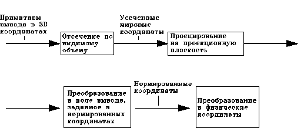
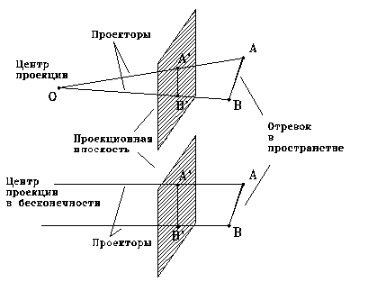

|
Процесс вывода 3D графической информации по существу более сложный, чем соответствующий процесс вывода 2D графической информации.
В двумерном случае просто задается окно в двумерном мировом координатном пространстве и поле вывода на двумерной видовой поверхности. В общем случае объекты, описанные в мировых координатах, отсекаются по границе видимого объема, а после этого преобразуются в поле вывода для дисплея. Сложность, характерная для трехмерного случая, возникает потому, что видовая поверхность не имеет графического третьего измерения.
Для двумерного случая существуют следующие понятия и термины, которые можно распространить и на трехмерные случаи.
Прямоугольная область в мировых координатах, которую пользователь хочет вывести в текущий момент, называется - окном. Цель процедуры задание границ окна по каждой координатной оси.
Заданное окно в мировых координатах должно быть выведено на видовую поверхность - поле вывода, которое может занимать часть или весь экран. Кроме того, должна реализовываться процедура - отсечения. Любой примитив, располагающийся полностью вне границ окна, на экран не отображается, а примитив, частично попадающий на экран, отсекается по краю окна перед отображением.
Перемещая окно и выполняя изменения его размеров, мы можем создавать такие кинематографические эффекты, как панорамирование (zoom), крупный или мелкий план.
Несоответствие между пространственными объектами и плоскими изображениями устраняются путем введения проекций, которые отображают трехмерные объекты на двумерной проекционной картинной плоскости.

Концептуальная модель процесса вывода 3D графической информации.
В процессе вывода 3D графической информации мы задаем видимый объем в мировом пространстве, проекцию на картинную плоскость и поле вывода на видовой поверхности. В общем случае объекты, определенные в 3D мировом пространстве, отсекаются по границе трехмерного видимого объема и после этого проецируются. То, что попадает в пределы окна, которое само является проекцией видимого объема на картинную плоскость, затем преобразуется (отображается) в поле вывода и отображается на графическом устройстве.
Данная модель воплощается во многих графических подпрограмм, оперирующих с 3D объектами.
Проекции
В общем случае проекции преобразуют точки, заданные в системе координат размерностью n, в точки системы координат меньше чем n. С помощью проецирования три измерения отображаются в два.
Проекции трехмерного объекта (представленного в виде совокупности точек) строится при помощи прямых проецирующих лучей, которые называются проекторами и которые выходят через каждую точку объекта и, пересекая картинную плоскость, образуют проекцию.

На рисунках показаны две различные проекции отрезков, а также проекторы, проходящие через его конечные точки. Проекция отрезка является отрезком, поэтому достаточно спроецировать лишь одни конечные точки.
Определенный таким образом класс проекций известен под названием плоских геометрических проекций, поскольку проецирование в этом случае производится на плоскость, а не на кривую поверхность, и в качестве проекторов используются прямые, а не кривые линии.
Плоские геометрические поверхности, которые в дальнейшем будем называть просто проекциями, можно подразделить на два основных класса: центральные и параллельные. Различие между ними определяется соотношением между центром проекции и проекционной плоскостью. Если расстояние между ними конечно, то проекция будет центральной, если же оно бесконечно, то проекция будет параллельной.
Параллельные проекции названы так потому, что центр проекции бесконечно удален и все проекторы параллельны. При описании центральной проекции мы явно задаем центр проекции, в то время как определяя параллельную проекцию, мы указываем направление проецирования.
Центральная проекция порождает визуальный эффект, аналогичный тому, к которому приводят фотографические системы или зрительная система человека, и поэтому используются в случаях, в которых желательно достичь определенной степени реальности. Этот эффект известен как перспективное укорачивание. Размер центральной проекции объекта изменяется пропорционально расстоянию от центра проекции до объекта. Это означает, что хотя центральная проекция и является реалистичной, она оказывается непригодной для представления точной формы и размеров объектов; из проекции нельзя получить информацию о расстояниях, углы сохраняются только на тех гранях объекта, которые параллельны проекционной плоскости; проекции параллельных линий в общем случае не параллельны.
Параллельная проекция порождает менее реалистичное изображение, поскольку отсутствует перспективное укорачивание, хотя при этом могут иметь различные постоянные укорачивания вдоль каждой из осей. Проекция фиксирует истинные размеры, и параллельные прямые остаются параллельными. Как и в случае центральной проекции, углы сохраняются только на тех гранях объекта, которые параллельны проекционной плоскости.
Центральные проекции
Центральные проекции любой совокупности параллельных прямых, которые не параллельны проекционной плоскости, будут сходиться в точке схода. Параллельные прямые в 3D пространстве пересекаются лишь в бесконечности, поэтому точку схода можно представить себе как проекцию точки, находящейся в бесконечности.
Если совокупность прямых параллельна одной из главных координатных осей, то их точка схода называется главной точкой схода.
Существует только три такие точки (по количеству координатных осей).
Если проекционная плоскость пересекает одну ось z, следовательно, перпендикулярна ей, то лишь на этой оси будут лежать главные точки схода, поскольку прямые параллельные осям x и y, параллельны проекционной плоскости и не имеют точек схода.
Центральные проекции классифицируются в зависимости от числа главных точек схода ,которыми они обладают, а следовательно, от числа координатных осей, которые пересекает координатная проекционная плоскость.
Двухточечная центральная проекция широко применяется в архитектурном, инженерном и промышленном проектировании, в рекламных изображениях.
Трехточечные центральные проекции почти не используются потому что их трудно конструировать и они мало повышают реалистичность.
Параллельные проекции
Параллельные проекции разделяются на два типа, в зависимости от соотношения между направлениями проецирования и нормалью к проецированной плоскости.
В ортографических параллельных проекциях эти два направления совпадают. В косоугольных параллельных проекциях они не совпадают.
Наиболее широко используемыми видами ортографических проекций являются: вид спереди, вид слева, вид справа, вид сверху, в которых картинная плоскость перпендикулярна главным координатным осям, совпадающими с направлением проецирования.
Косоугольные проекции сочетают в себе свойства ортографических проекций и аксонометрических. В этом случае проекционная плоскость перпендикулярна одной оси, а направление проецирования не перпендикулярно картинной плоскости.
|